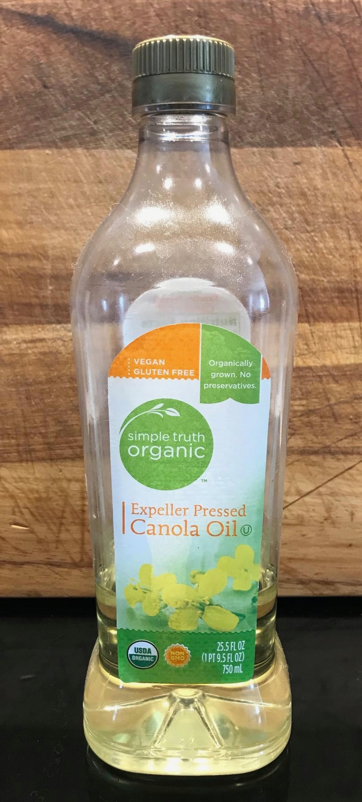
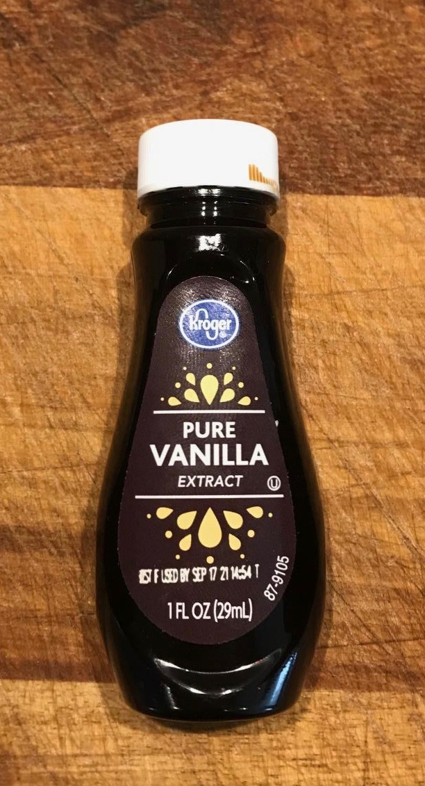

Buttermilk Chocolate Cake
Ingredients
- Flour, 2 cups
- Sugar, 2 cups
- Canola oil, ½ cup
- Cocoa, 4 tbsp + 4 tbsp
- Water, 1 cup
- Eggs, 2
- Buttermilk, 1 cup + 6 tbsp
- Baking soda, 1 tsp
- Vanilla, 1 tsp
- Butter, ½ cup + ½ cup
- Powdered sugar, 1 pound (16 oz)




Credit Where Due
A Bridget holiday classic.
Original recipe here.
Kitchen Gear
- Pot
- Baking pan about 11x17 inches
Commentary
- Frost the cake hot out of the oven
- This is a favorite to leave around the kitchen for holiday-long enjoyment
Bake Cake
- To pot add
- Canola oil, ½ cup
- Cocoa, 4 tbsp
- Butter, ½ cup
- Water, 1 cup
and bring to a boil, stirring regularly
- In a large bowl, mix flour and sugar then stir in boiled ingredients
- Stir in
- Beaten eggs, 2
- Buttermilk, 1 cup
- Baking soda, 1 tsp
- Vanilla, 1 tsp
- Pour into a greased + floured 11x17 pan and bake 25 - 35 min at 350° F
Prepare Frosting
- To pot add
- Buttermilk, 6 tbsp
- Cocoa, 4 tbsp
- Butter, ½ cup
and bring to a boil
- Remove from heat and stir in powdered sugar, 1 pound (16 oz)
Frost and Serve
- Frost the cake hot out of the oven
- Let cool then slice as desired
- Enjoy!